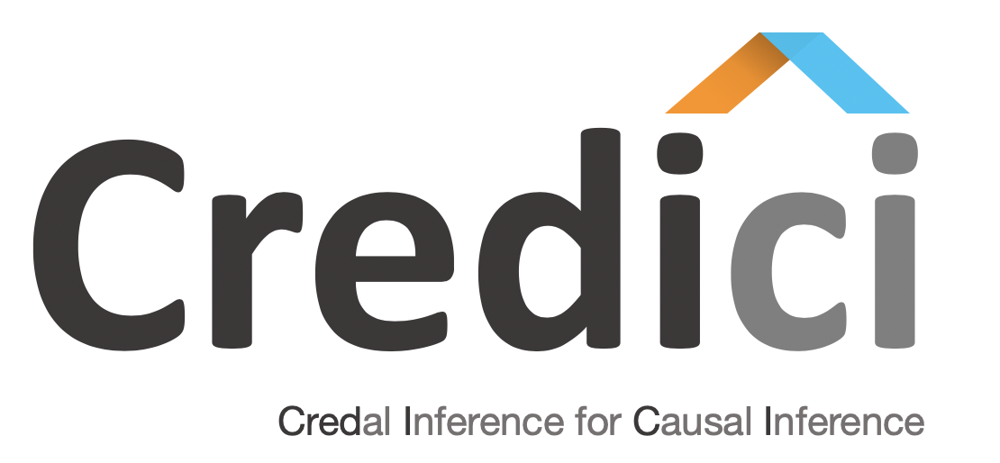

Credici: A Java Toolbox for Causal Inference Using Credal Methods¶
{kind=link}
Credici is an open-source Java library for causal analysis. Inference is done using well-founded methods for inference on credal networks, which is done in a transparently to the user.
The main features of Credici are:
Allows to easily define Structural Causal Networks (SCM).
Causal inference: causal effects and counterfactuals.
Inference is based in methods for inference in credal networks (exact and approximate).
SCMs can me transformed in equivalent credal networks can be exported in UAI format.
Installation¶
Credici can be installed from maven. For further details, check the Installation section.
Citation¶
For the theoretical results in which this tool is based, refer to the following publication.
@InProceedings{zaffalon2020structural,
author = {Zaffalon, Marco and Antonucci, Alessandro and Caba\~{n}as, Rafael},
title = {Structural Causal Models Are Credal Networks},
booktitle = {Proceedings of the tenth International Conference on Probabilistic Graphical Models},
year = {2020},
series = {Proceedings of Machine Learning Research},
address = {Aalborg, Denmark},
month = {23--25 Sep},
publisher = {PMLR},
}
Quick Start
Other